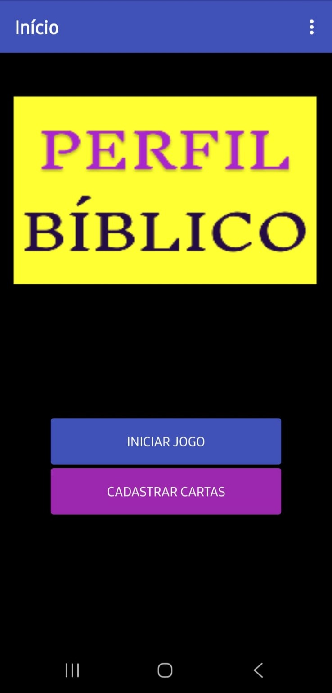
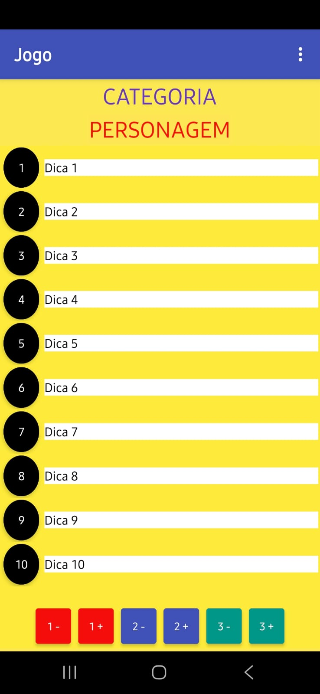
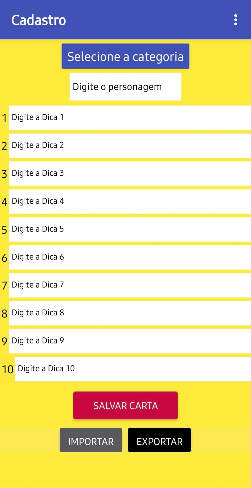

Perfil Bíblico
Este app eu criei para meu uso particular, para me divertir com meus amigos. É baseado no jogo de tabuleiro Perfil, mas em formato de aplicativo, e usando como base meus conhecimentos bíblicos para criar as cartinhas virtuais com as dicas.
Galeria de Imagens


